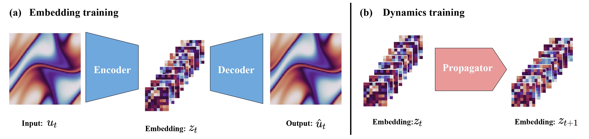
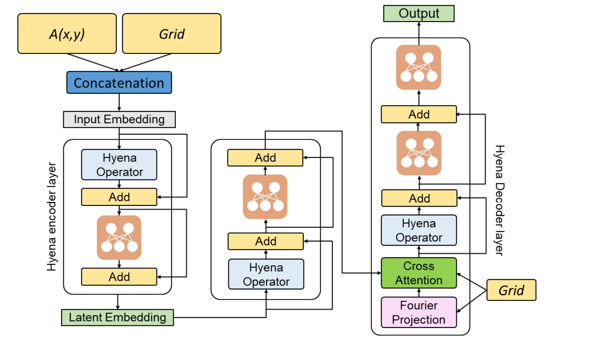
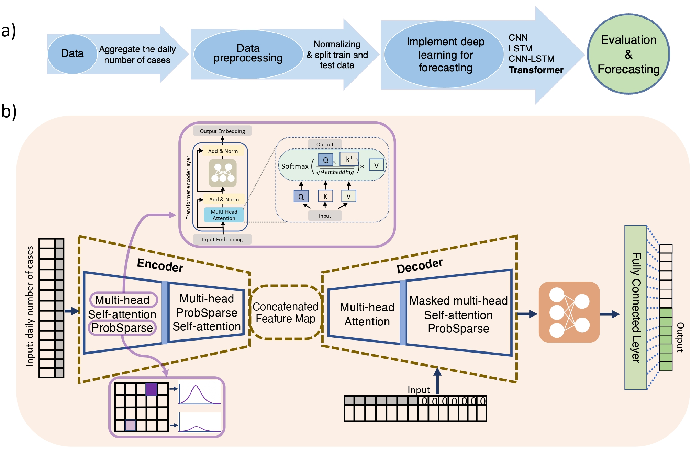

|
Saurabh Patil
Welcome! I worked as a research assistant at Mechanical and AI lab in Mechanical Engineering department at Carnegie Mellon University(CMU),
where I worked at the intersection of numerical simulation and deep learning. Prior to that I graduated with a Master's degree in Mechanical Engineering from CMU.
(I am actively looking for opportunities as a Machine Learning Engineer. If you think I am a good fit for your position, please feel free to reach out)
Email /
CV /
Scholar /
Github /
Linkedin
|
|
Publications
(* denotes equal contribution)
|
|  |
Latent Neural PDE Solver: a reduced-order modelling framework for partial differential equations
Zijie Li*,Saurabh Patil*,
Francis Ogoke,
Dule Shu,
Wilson Zhen,
Michael Schneier,
John R. Buchanan, Jr.
Amir Barati Farimani,
arXiv, 2024
In this paper we propose to learn the dynamics of the system in the latent space with much
coarser discretizations.
|
|  |
Hyena neural operator for partial differential equations
Saurabh Patil,
Zijie Li,
Amir Barati Farimani,
APL Machine Learning, 2024
code
In this paper we propose and study a state space based neural operator that is capable of sub-quadratic complexity and a global receptive field.
|
|  |
Forecasting COVID-19 New Cases Using Transformer Deep Learning Model
Saurabh Patil,
Parisa Mollaei,
Amir Barati Farimani,
medRxiv, 2023
code
In this study, an effort was made to improve the correctness of the models by incorporating recent advancements in attention-based models for time-
series forecasting.
|
Feel free to steal this website's source code. Do not scrape the HTML from this page itself, as it includes analytics tags that you do not want on your own website — use the github code instead. Also, consider using Leonid Keselman's Jekyll fork of this page.
|
|
{kind=link}